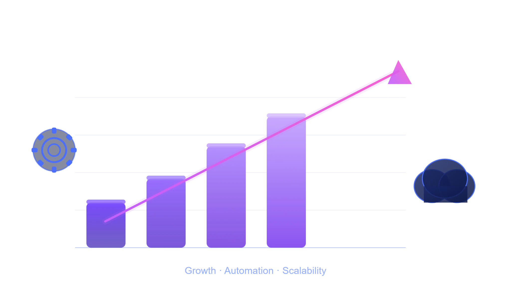

Automation Solutions For Every Stage Of Growth
Start with one clearly defined automation service, choose a coordinated bundle when several workflows need to work together, or request a custom implementation for more complex requirements.
Starting prices are based on a standard scope. Final requirements, third-party costs and optional maintenance are confirmed before implementation.
Starting prices reflect a standard baseline scope. Final pricing depends on workflow complexity, integrations, data requirements, usage volume and testing needs. Third-party subscriptions and usage fees are identified separately where applicable. Your scope and price are confirmed before implementation begins.
Choose A Service That Fits Your Business
Flexible automation services designed for startups, growing businesses and modern teams.
Renewal and Expiration Reminder Automation
Automate renewal and expiration reminders through WhatsApp, record delivery status and support timely customer follow-up using a workflow adapted to your business process.
Essential Automation
Optional maintenance from $19/month
A focused setup for one clearly defined renewal or expiration reminder workflow with standard business rules.
- ✓ One Renewal or Expiration Reminder Workflow
- ✓ One Trigger or Entry Point
- ✓ Up to Two Connected Business Tools
- ✓ Standard Message Templates and Status Tracking
- ✓ Basic Testing, Handover and Email Support
Business Workflow Automation
Optional maintenance from $49/month
A multi-step setup for coordinated renewal reminders, follow-up logic and connected business systems.
- ✓ Multi-Step Reminder Sequences
- ✓ Renewal and Expiration Follow-Up Logic
- ✓ Up to Four Connected Business Tools
- ✓ CRM, API and Delivery-Status Integration Where Required
- ✓ Expanded Testing and Priority Email Support
Advanced Automation
Optional maintenance typically from $99/month
A tailored setup for advanced renewal operations requiring multiple systems, escalation rules and more complex business logic.
- ✓ Custom Multi-Stage Reminder Architecture
- ✓ Advanced Routing, Escalation and Exception Handling
- ✓ Multiple Systems, APIs and Data Sources
- ✓ Delivery Fallback and Incident Workflows Where Required
- ✓ Expanded Testing, Documentation and Maintenance Planning
Intelligent Lead Qualification and CRM Enrichment
Capture incoming or existing leads, validate essential information, enrich records and route better-fit opportunities into your CRM. Core uses transparent business rules, while Growth and Elite add controlled AI analysis based on criteria approved by your business.
Rule-Based Qualification
Optional maintenance from $39/month
A transparent setup for capturing or importing leads, checking required information, applying client-defined qualification rules and updating one CRM without unnecessary AI costs.
- ✓ One Lead Intake or Import Workflow
- ✓ Required-Field and Contact-Data Validation
- ✓ Client-Defined Rule-Based Qualification
- ✓ One Lead Source and One CRM Connection
- ✓ Basic Routing, Testing, Handover and Email Support
AI-Assisted Qualification
Optional maintenance from $99/month
A hybrid setup that first validates leads with business rules, then applies selective AI scoring and interpretation against criteria approved by the client.
- ✓ Multiple Lead Intake Sources
- ✓ AI Scoring Against Client-Approved ICP Criteria
- ✓ 0–100 Score, Fit Level, Confidence and Short Explanation
- ✓ CRM Field Enrichment, Hot/Warm/Cold Routing and Manual Review
- ✓ Expanded Testing, Documentation and Priority Email Support
Advanced Prospect Intelligence
Optional maintenance typically from $199/mo
A tailored lead-intelligence architecture for deeper enrichment, qualitative analysis, CRM-history-informed scoring, advanced routing and multi-system operations.
- ✓ Custom Multi-Source and Multi-System Architecture
- ✓ Advanced Company, Website and Business-Data Enrichment
- ✓ CRM-History-Informed Scoring and Configurable Weighting
- ✓ Detailed Explanations, Duplicate Handling and Opportunity Summaries
- ✓ Advanced Routing, Reporting, Testing and Maintenance Planning
AI Support Email Triage
Classify incoming support emails, identify priority and routing needs, organize records and support faster handling through an AI-assisted workflow adapted to your support process.
Focused AI Triage
Optional maintenance from $29/mo
A focused setup for classifying incoming support emails, applying standard priority rules and organizing messages for follow-up.
- ✓ One Support Inbox Workflow
- ✓ Standard Category and Priority Classification
- ✓ One Email Platform and One Tracking Tool
- ✓ Labels, Status Updates and Basic Routing
- ✓ Basic Testing, Handover and Email Support
Advanced Support Operations
Optional maintenance from $69/mo
A multi-step setup for classifying support emails, applying advanced routing rules and coordinating follow-up across connected support systems.
- ✓ Multiple Support Categories and Priority Rules
- ✓ Multi-Step Routing and Manual-Review Logic
- ✓ Up to Four Connected Business Tools
- ✓ Suggested Draft Replies and Ticket Escalation Where Required
- ✓ Expanded Testing, Documentation and Priority Email Support
Advanced Support Architecture
Optional maintenance typically from $129/mo
A tailored support-operations architecture for complex classification, escalation, exception handling and multi-system service workflows.
- ✓ Custom Multi-Inbox and Multi-Category Architecture
- ✓ Advanced Classification, Routing and Escalation Logic
- ✓ Multiple Support Platforms, APIs and Data Sources
- ✓ AI-Assisted Drafting and Decision Support Where Appropriate
- ✓ Expanded Testing, Documentation and Maintenance Planning
Complete Automation Bundles For Growing Businesses
Combine multiple automation areas into one coordinated implementation with shared tools, routing logic, status tracking and operational safeguards.
Business Automation Bundles
Core Automation Bundle
Optional maintenance from $99/mo
A coordinated implementation for small businesses that need up to three standardized workflows connected through shared tools, statuses and rule-based routing.
- ✓ Up to Three Standardized Automation Workflows
- ✓ Renewal, Lead Qualification and Support Workflow Areas
- ✓ Up to Three Connected Business Tools
- ✓ Shared Validation, Status Tracking and Rule-Based Routing
- ✓ Coordinated Testing, Handover and Email Support
Growth Automation Suite
Optional maintenance from $199/mo
A connected automation suite for growing businesses that need multi-step workflows, selective AI processing, broader integrations and coordinated exception handling.
- ✓ Three Coordinated Multi-Step Automation Areas
- ✓ AI-Assisted Lead Qualification and Support Classification
- ✓ CRM, Messaging, Email and API Integrations as Scoped
- ✓ Shared Status Tracking, Priority Routing and Manual Review
- ✓ Expanded Testing, Documentation and Priority Support
Elite Automation Ecosystem
Maintenance quoted separately — typically from $399/mo
A tailored automation ecosystem for complex operations requiring multiple systems, advanced decision logic, deeper data intelligence and robust operational safeguards.
- ✓ Custom Multi-Workflow and Multi-System Architecture
- ✓ Advanced Lead Intelligence, Support Triage and Escalation Logic
- ✓ Multiple CRMs, APIs, Messaging Channels and Data Sources
- ✓ Advanced Routing, Exception Handling, Fallbacks and Reporting
- ✓ Expanded Testing, Documentation, Monitoring and Maintenance Planning
Potential Operational Benefits
Streamline Repetitive Work
Improve Process Consistency
Support Better Data Handling
Support Timely Follow-Up
Choose The Right Starting Point
Individual Service
✓ One Clearly Defined Automation Service
✓ Lower Starting Investment
✓ Focused Implementation Scope
✓ Can Be Expanded or Connected Later
Best for one immediate operational need
Bundles
✓ Several Coordinated Automation Areas
✓ Shared Architecture and Implementation Planning
✓ Connected Tools, Shared Statuses and Routing Logic
✓ Coordinated Testing, Documentation and Handover
Best when several workflows need to work together
Custom
✓ Architecture Adapted to Your Operations
✓ Multiple Systems, APIs and Data Sources
✓ Advanced Routing and Business Logic
✓ Advanced Testing, Monitoring and Maintenance Planning
Best for complex or unique operational requirements
Individual Service
Implementation from $149
Optional maintenance from $19/month
Best for one defined automation need
Bundles
Implementation from $749
Optional maintenance from $99/month
Best for several coordinated workflows
Custom
Custom quote — projects typically start from $2,999
Maintenance quoted separately, typically from $399/month
Best for complex operations
Need Something More Specific?
Combine multiple services, request advanced integrations or discuss a custom automation architecture adapted to your operational requirements.
Custom Automation Architecture
A tailored approach for operations requiring multiple workflows, advanced integrations, custom routing logic or coordination across several business systems.
- ✓ Custom Workflow Architecture
- ✓ Multiple Coordinated Automation Areas
- ✓ Advanced CRM, API and System Integrations
- ✓ AI-Supported Processing Where Appropriate
- ✓ Testing, Documentation and Maintenance Planning
We review your workflow, systems and requirements before recommending an appropriate architecture and implementation scope.
No commitment to submit a request. The proposed scope, implementation price, optional maintenance and applicable third-party costs are clarified before work begins.
Discuss My Project🛡️ One-time implementation fees cover the agreed setup, configuration and testing scope. Optional maintenance may include monitoring, technical updates, support and agreed workflow adjustments, depending on the selected plan.
Why Businesses Choose AutomateSuite
We focus on practical automation systems designed to streamline repetitive work, improve process consistency and support more efficient operations.
More Efficient Operations
Reduce repetitive manual tasks and streamline daily workflows through automation.
More Consistent Customer Follow-Up
Support consistent communication, routing and follow-up through clearly defined automated workflows.
Scalable Systems
Build automation workflows that can be extended as your processes, tools and operational needs evolve.
Frequently Asked Questions
Choose an individual Core service for one clearly defined automation need, Growth for a broader multi-step workflow, and Elite for advanced requirements involving several systems, custom routing or more complex logic. Choose a bundle when several automation areas need to work together.
Choose an individual service when you want to address one immediate operational need with a focused implementation scope. Choose a bundle when several workflows need shared planning, connected tools and coordinated status tracking.
Your implementation scope and price are confirmed before work begins. Optional maintenance and applicable third-party subscriptions or usage fees, such as automation platforms, AI services, messaging providers or CRM plans, are identified separately where required.
A focused Core implementation may take several business days once the required access and information are available. Growth, Elite and bundle projects generally require more time because they involve additional workflows, integrations, testing and documentation. A delivery estimate is confirmed after the scope has been reviewed.
Yes. Optional maintenance plans may include monitoring, technical updates, support and agreed workflow adjustments. The exact coverage depends on the selected service, implementation scope and maintenance plan.
Many implementations can connect with CRMs, email platforms, spreadsheets, databases, APIs and other business tools. Compatibility, access requirements and potential third-party costs are reviewed before implementation.
No advanced technical knowledge is required to request or use the service. You will need to explain your current process, provide the necessary access and participate in testing or validation where required. Handover guidance is included according to the selected plan.
Yes. An existing automation can be extended with additional steps, integrations or connected workflows after a new scope review. The feasibility, price and testing requirements are confirmed before the extension begins.
Yes. Individual services can be combined into a coordinated bundle or custom implementation. We review the workflows, shared tools and dependencies before recommending the most appropriate structure.
We review your request, clarify the workflow, required tools, integrations and expected outcomes, and then confirm the proposed scope, implementation price, estimated delivery time, optional maintenance and applicable third-party costs. Work begins only after the proposal is approved.
You can request a custom implementation. We can review multiple workflows, existing systems, integration requirements, routing logic and other operational constraints before recommending an appropriate architecture.
Flexible Pricing for Different Automation Needs
AutomateSuite offers flexible automation pricing for clearly defined individual services, coordinated automation bundles and custom implementations. Each option is scoped according to the workflows, integrations, data requirements and testing involved.
Available automation areas include renewal reminders, intelligent lead qualification and CRM enrichment, AI support email triage and other repetitive operational workflows. Final implementation scope, optional maintenance and applicable third-party costs are confirmed before work begins.